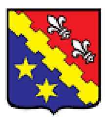

Eu dês de cedo e sempre ia para a escola pela
manhã e voltava a tarde, a minha pré-escola passei
na pedacinho do céu onde o para o colégio Murialdo
unidade Centro...
|
|
|  |
Onde todo o meu ensino fundamental des do primeiro
até o nono ano fiz curso de ano e por conta de a escola
ser de tarde e meus pais trabalharem o dia inteiro
eu passava as manhãs dos 5 primeiros anos no contra
turno da escola ...
|
E agora estou no Ensino médio do SENAC onde estou
cursando técnico em informática aprendendo no primeiro
ano a criar sites utilizando html css e javascript...
|
|
Durante a minha vida fiz alguns cursos extras sendo eles capoeira na pré-escola robótica no fundamental
e inglês durante metade do fundamental e terminarei na medate do segundo ano do médio
|